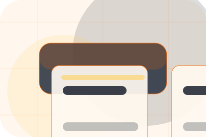
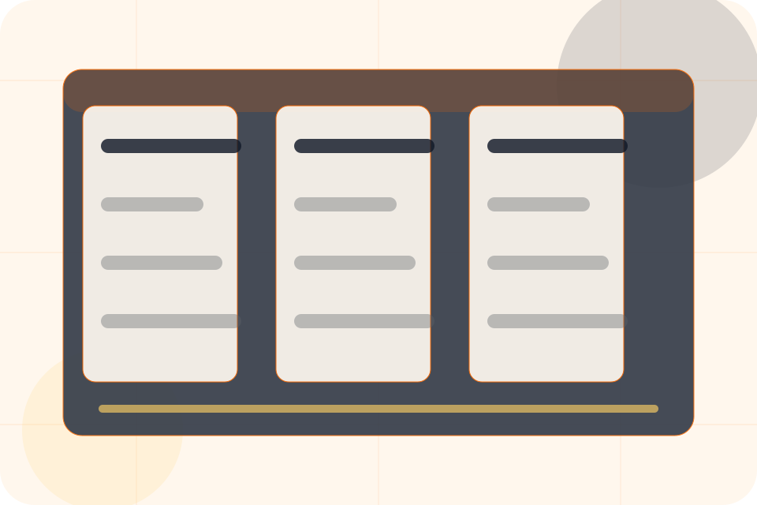
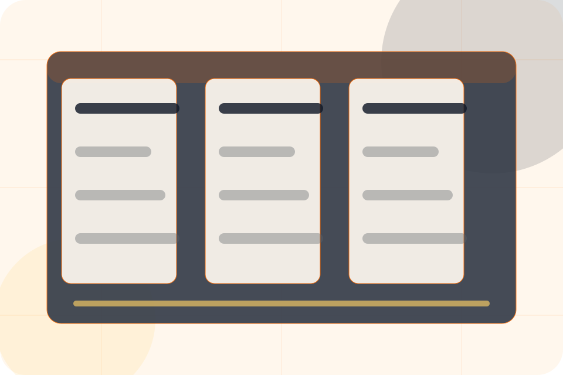
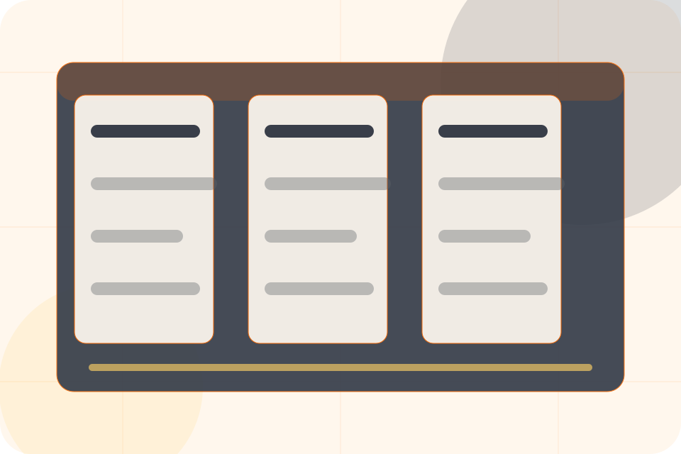
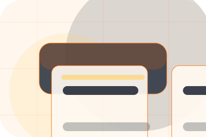
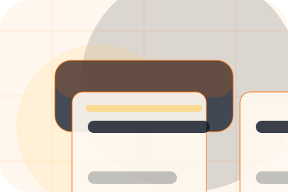
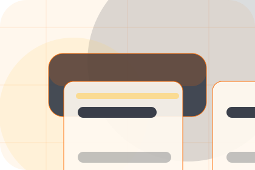
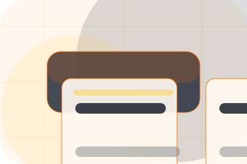
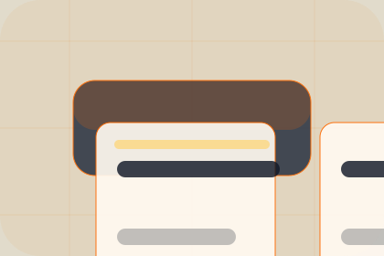

Context
Before gives the page a specific angle instead of repeating the navigation label.
Projects / 01
Projects opens as a clear construction decision hub: what Forge offers, who it helps, why it matters, and which route to take first.
The first screen combines positioning, proof, primary action, and fast internal navigation, so people can act immediately or compare the rest of the projects route with context.
Worksite software hero
Select the closest route and Forge keeps the next step, proof, and follow-up expectation aligned with certainty around cost and disruption.

Projects / 02
Portfolio adds professional context to the projects route, using the construction platform grid structure to support certainty around cost and disruption before visitors choose a next step.
Forge uses project control cards and focused copy to make the decision easier to scan, aligning the section with certainty around cost and disruption rather than filling space.
Explore ProjectsForge structures portfolio around context, judgment, and a clear next route so visitors can compare the block quickly before they request an estimate.
Request Estimate

Projects / 03
Before adds professional context to the projects route, using the construction platform grid structure to support certainty around cost and disruption before visitors choose a next step.
Forge uses project control cards and focused copy to make the decision easier to scan, aligning the section with certainty around cost and disruption rather than filling space.
Explore Projects
Before gives the page a specific angle instead of repeating the navigation label.

The project control cards show what to compare, what to avoid, and what matters most for construction, building & renovation visitors.

The final cue points to a useful internal route so the section keeps the journey moving.
Projects / 04
Residential adds professional context to the projects route, using the construction platform grid structure to support certainty around cost and disruption before visitors choose a next step.
Forge uses project control cards and focused copy to make the decision easier to scan, aligning the section with certainty around cost and disruption rather than filling space.
Explore ProjectsResidential gives the page a specific angle instead of repeating the navigation label.
Projects / 05
Commercial adds professional context to the projects route, using the construction platform grid structure to support certainty around cost and disruption before visitors choose a next step.
Forge uses project control cards and focused copy to make the decision easier to scan, aligning the section with certainty around cost and disruption rather than filling space.
Explore ProjectsCommercial gives the page a specific angle instead of repeating the navigation label.

The project control cards show what to compare, what to avoid, and what matters most for construction, building & renovation visitors.

The final cue points to a useful internal route so the section keeps the journey moving.
Projects / 06
Details adds professional context to the projects route, using the construction platform grid structure to support certainty around cost and disruption before visitors choose a next step.
Forge uses project control cards and focused copy to make the decision easier to scan, aligning the section with certainty around cost and disruption rather than filling space.
Explore ProjectsDetails gives the page a specific angle instead of repeating the navigation label.
The project control cards show what to compare, what to avoid, and what matters most for construction, building & renovation visitors.
The final cue points to a useful internal route so the section keeps the journey moving.
Projects / 07
Materials adds professional context to the projects route, using the construction platform grid structure to support certainty around cost and disruption before visitors choose a next step.
Forge uses project control cards and focused copy to make the decision easier to scan, aligning the section with certainty around cost and disruption rather than filling space.
Explore ProjectsMaterials gives the page a specific angle instead of repeating the navigation label.
The project control cards show what to compare, what to avoid, and what matters most for construction, building & renovation visitors.
The final cue points to a useful internal route so the section keeps the journey moving.
Projects / 08
Results shows what changes after the work: clearer decisions, visible progress, and proof points that connect the offer to real outcomes.
The layout connects before-and-after thinking with measured outcomes, making the result easy to scan without promising what the business cannot guarantee.
Explore ProjectsThe uncertainty, delay, or missed opportunity visitors bring into results.
The clearer, safer, or more valuable state Forge is designed to support.
The visible cue that connects results to a believable decision, not a loose claim.
Projects / 09
Reviews converts customer proof into a useful buying signal: the problem, the experience, and what changed afterward.
Proof stays believable by focusing on situation, service experience, and practical change rather than vague praise or unsupported results.
Explore ProjectsWhat the visitor needed before choosing Forge, written with enough context to feel real.
How the service, product, or support felt during the process, not just that it was good.
What became easier to decide, complete, buy, book, or trust after the interaction.
Projects / 10
Forge closes the projects route with a clear action, a quick reminder of the value, and a low-friction way to request an estimate.
Visitors who are ready can use the primary action. Visitors who are still comparing can scan the section links, proof, and support routes before they request an estimate.
Request EstimateThe final block keeps the choice simple: act now, compare one more proof route, or send enough detail for a focused response.
Request Estimatecertainty around cost and disruption
A build-management site with construction CTAs, project panels, safety proof, and estimate routing. Projects ends with a direct path to request an estimate, plus enough context for visitors who still need to compare.

Request EstimateInformation is provided for planning and should be reviewed for the final client, location, and operating rules.